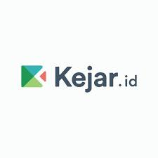
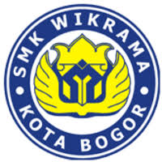
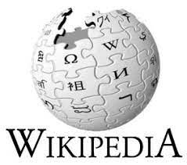

Muhammad Firdaus Dwi Ananda
Nama saya Firdaus. Saya merupakan siswa kelas X program keahlian PPLG SMK Wikrama Bogor.Saya sedang mengembangkan keahlian diri dalam bidang Front End Development.
Muhammad Firdaus Dwi Ananda
Sukabumi, 07 November 2005
Intagram : @muhammadfirdaus07685
Email : muhammadfirdausdwiananda@smkwikrama.sch.id
| Sekolah | Tahun |
|---|---|
| SMK Wikrama Bogor | 2021-Sekarang |
| SMP Negeri 2 Cigombong | 2018-2021 |
| SD Negeri Ciburuy | 2012-2018 |
Kejar.id menyediakan konten pembelajaran dan sistem informasi sekolah yang dimana inilah yang membuat saya semangat untuk belajar.
Web meliputi profil sekolah. membuat saya ingin menjadi seseorang yang sukses di bidang IT setelah melihat profil SMK Wikrama Bogor yang dimana memiliki Visi menjadi sekolah kejuruan teladan nasional yang berbudaya lingkungan, berkarakter kebangsaan, berbasis teknologi dan mampu memenuhi kebutuhan dunia kerja
Wiki adalah sebuah situs web (atau koleksi dokumen hiperteks lainnya) yang memperbolehkan penggunanya menambah atau menyunting (mengedit) isi situs tersebut. Istilah ini juga dapat merujuk kepada perangkat lunak kolaboratif yang digunakan untuk menciptakan situs website. Tujuan Wikipedia adalah untuk menciptakan ensiklopedia bebas untuk semua pengguna. ensiklopedia yang terbesar dan terlengkap.
